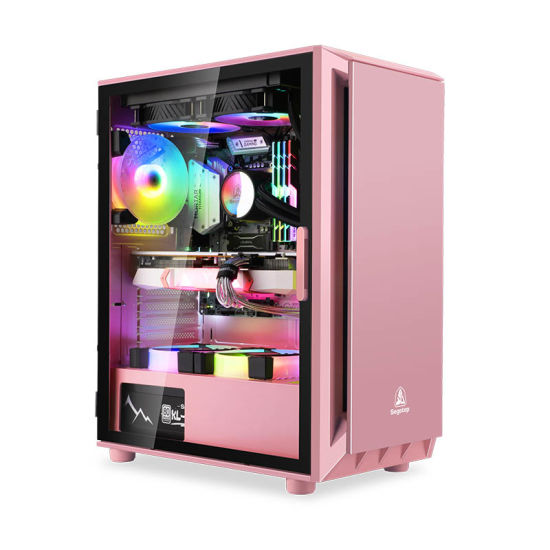

Buildding04

Caja: Tempest ATX CASE RGB Soul Cristal Templado USB 3.0
Fuente de alimentación: Tempest 650W / 750W
Procesador: Intel Core i3-10105 3.7 GHz
Placa base: B560M o similar según disponibilidad
Disco duro:
SSD 480GB SATA3
Memoria RAM: DDR4 2666Mhz 16GB
Tarjeta gráfica: Nvidia GeForce GTX 1650 4GB (Según disponibilidad)
1 x HDMI
1 x DisplayPort
Conexiones delanteras:
USB 3.0 x1
USB 2.0 x2
Auricular/Microfono x1 (HD Audio)
Encendido/Apagado
Control Led tira frontal
Conexiones traseras
Cantidad de puertos USB 2.0: 4
Cantidad de puertos tipo A USB 3.2 Gen 1 (3.1 Gen 1): 2
Ethernet LAN (RJ-45) cantidad de puertos: 1
Puerto de ratón PS/2: 2
Cantidad de puertos VGA (D-Sub): 1
Número de puertos HDMI: 1
Versión HDMI: 1.4
Cantidad de puertos DVI-D: 1
Salidas para auriculares: 3
Dimensiones: (L x An x Al) 335mm x 200mm x 440mm